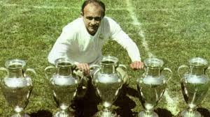

FOUNDED in 1902 as Madrid Football Club, the club has traditionally worn a white home kit since its inception. The honorific title real is Spanish for "royal" and was bestowed to the club by King Alfonso XIII in 1920 alongside with the crown in the club crest. Real Madrid have played their home matches in the 85,000-capacity Santiago Bernabéu in Madrid since 1947. Unlike most European sporting clubs, Real Madrid's members (socios) have owned and operated the club throughout its history. The official Madrid anthem is the "Hala Madrid y nada más", written by RedOne and Manuel Jabois.[8] The club is one of the most widely supported in the world and is the most followed football club on social media according to the CIES Football Observatory as of 2023.[9][10] It was estimated to be worth $6.6 billion in 2024, making it the world's most valuable football club.[11] In 2024, Real Madrid become the first football club to make €1 billion ($1.08bn) in revenue according to the club's announcement.[12] Real Madrid are one of the most successful clubs in the sport. In domestic football, the club has won 71 trophies; a record 36 La Liga titles, 20 Copa del Rey, 13 Supercopa de España, a Copa Eva Duarte and a Copa de la Liga.[13] In International football, Real Madrid have won a record 35 trophies: a record 15 European Cup/UEFA Champions League titles, a record six UEFA Super Cups, two UEFA Cups, a joint record two Latin Cups, a record one Iberoamerican Cup, and a record nine FIFA Club World championships.[note 1] Madrid was ranked first in the International Federation of Football History & Statistics Club World Ranking for 2000, 2002, 2014, 2017.[17] In UEFA, Madrid ranks first in the all-time club ranking.[18][19] Being one of the three founding members of La Liga that have never been relegated from the top division since its inception in 1929 (along with Athletic Bilbao and Barcelona), Real Madrid has many long-standing rivalries, most notably El Clásico with Barcelona and El Derbi Madrileño with Atlético Madrid. The club established itself as a major force in both Spanish and European football during the 1950s and 60s, winning five consecutive and six overall European Cups and reaching a further two finals. This success was replicated on the domestic front, with Madrid winning 12 league titles in 16 years. This team, which included Alfredo Di Stéfano, Ferenc Puskás, Paco Gento and Raymond Kopa is considered, by some in the sport, to be the greatest of all time.[20][21] Real Madrid is known for its Galácticos policy, which involves signing the world's best players, such as Ronaldo, Zinedine Zidane and David Beckham to create a superstar team.[22] The term 'Galácticos policy' generally refers to the two eras of Florentino Pérez's presidency of the club (2000–2006 and 2009–2018); however, players brought in just before his tenure are sometimes considered to be part of the Galácticos legacy. A notable example is Steve McManaman, who like many other players also succeeded under the policy.[23] On 26 June 2009, Madrid signed Cristiano Ronaldo for a record-breaking £80 million (€94 million);[24] he became both the club's and history's all-time top goalscorer.[25][26][27][28] Madrid have recently relaxed the Galácticos policy, instead focusing on signing young talents such as Vinícius Júnior, Rodrygo, Jude Bellingham[29] and Kylian Mbappé.[30][31] Real Madrid is recognised as the greatest football club of the 20th centu8ry by FIFA and as the best European club during the same timeframe by the IFFHS,[32] while also receiving the FIFA Centennial Order of Merit in 2004.[33] Real Madrid has the highest participations in the European Cup/Champions League (55),[18] a tournament in which they hold the overall record for the most wins, most draws and most goals scored.[34] Real Madrid is the only club to have won three consecutive titles (three-peat) in the European Cup/Champions League twice, first in 1955–56, 1956–57, and 1957–58, and second in 2015–16, 2016–17 and 2017–18 and was the first and the only club to win La Decima (in 2013-14).[35] In June 2024, they won a record-extending 15th Champions League title (the sixth in eleven seasons), recognised as such by Guinness World Records.[36] Real Madrid is the first club across all of Europe's top-five leagues to win 100 trophies in all competitions.[37] As of July 2024, Real Madrid are ranked 2nd in the UEFA club rankings and first in last 10 years (2013–2023) overall.[38][39]
Julián Palacios, the first president of the club in 1900–1902
Real Madrid's origins go back to when football was introduced to Madrid by the academics and students of the Institución Libre de Enseñanza, which included several Cambridge and Oxford University graduates.[40] They founded (Sociedad) Sky Football in 1897, commonly known as La Sociedad (The Society) as it was the only one based in Madrid, playing on Sunday mornings at Moncloa.
In 1900, conflict between members caused some of them to leave and create a new club, Nueva Sociedad de Football (New Society of Football), to distinguish themselves from Sky Football. Among the dissenters were Julián Palacios, recognized as the first Real Madrid president, Juan Padrós and Carlos Padrós, the latter two being brothers and future presidents of Real Madrid. In 1901, this new club was renamed as Madrid Football Club. Later, following a restructuring in 1902, Sky was renamed as "New Foot-Ball Club".[41][42][43]
 after its founding, in 1905, Madrid FC won its first title after defeating Athletic Bilbao in the Spanish Cup final. The club became one of the founding sides of the Royal Spanish Football Federation on 4 January 1909, when club president Adolfo Meléndez signed the foundation agreement of the Spanish FA. After moving between several grounds, the team relocated to the Campo de O'Donnell in 1912.[46] In 1920, the club's name was changed to Real Madrid after King Alfonso XIII granted the title of Real (Royal) to the club.[47]
In 1929, the first Spanish football league was founded. Real Madrid led the first league season until the last match, a loss to Athletic Bilbao, meant they finished runners-up to Barcelona.[48] Real Madrid won its first league title in the 1931–32 season and retained it the following year.[49]
On 14 April 1931, the arrival of the Second Spanish Republic caused the club to lose the title Real and the royal crown on its emblem, going back to being named Madrid Football Club until the end of the Spanish Civil War. Football continued during the Second World War, and on 13 June 1943, Madrid beat Barcelona 11–1 in the second leg of the Copa del Generalísimo semi-finals, the Spanish Cup having been renamed in honour of General Franco.[note 2][50]
after its founding, in 1905, Madrid FC won its first title after defeating Athletic Bilbao in the Spanish Cup final. The club became one of the founding sides of the Royal Spanish Football Federation on 4 January 1909, when club president Adolfo Meléndez signed the foundation agreement of the Spanish FA. After moving between several grounds, the team relocated to the Campo de O'Donnell in 1912.[46] In 1920, the club's name was changed to Real Madrid after King Alfonso XIII granted the title of Real (Royal) to the club.[47]
In 1929, the first Spanish football league was founded. Real Madrid led the first league season until the last match, a loss to Athletic Bilbao, meant they finished runners-up to Barcelona.[48] Real Madrid won its first league title in the 1931–32 season and retained it the following year.[49]
On 14 April 1931, the arrival of the Second Spanish Republic caused the club to lose the title Real and the royal crown on its emblem, going back to being named Madrid Football Club until the end of the Spanish Civil War. Football continued during the Second World War, and on 13 June 1943, Madrid beat Barcelona 11–1 in the second leg of the Copa del Generalísimo semi-finals, the Spanish Cup having been renamed in honour of General Franco.[note 2][50]
Amancio Amaro, captain of the Yé-yé team of the 1960s
In 1955, acting upon the idea proposed by Gabriel Hanot, a French sports journalist and editor of L'Équipe, Bernabéu, Ernest Bedrignan (deputy chairman of the Ligue de Football Professionnel)[59] and Gusztáv Sebes created the European Cup, a continental tournament for the league champions around Europe, which is today known as the UEFA Champions League.[60] It was under Bernabéu's guidance that Real Madrid established itself as a major force in both Spanish and European football. The club won the European Cup five times in a row between 1956 and 1960, which included the 7–3 Hampden Park final against Eintracht Frankfurt in 1960.[58] After these five consecutive successes, Real was permanently awarded the original cup and earned the right to wear the UEFA badge of honour.[61] Real Madrid's achievements in Europe were built upon its unprecedented domestic dominance, with the club winning twelve league titles out of sixteen possible from 1953–54 to 1968–69, including a five-in-a-row sequence in 1961–65, and finishing runners-up a further three times.[62]
Real Madrid's captain Paco Gento shaking hands with Zamalek's captain Sharif El-Far before their friendly match on the occasion for celebrating 50 years on Zamalek's establishment in Cairo Stadium on 10 March 1961
The club won the European Cup for a sixth time in 1966, defeating Partizan Belgrade 2–1 in the final with a team composed entirely of same nationality players, a first in the competition.[63] This team became known as the Yé-yé. The name "Yé-yé" came from the "Yeah, yeah, yeah" chorus in The Beatles' song "She Loves You" after four members of the team posed for Marca and impersonated the Beatles.[64] The Yé-yé generation was also European Cup runners-up in 1962[65] and 1964.[63] In the 1970s, Real Madrid won six league championships and three Spanish Cups.[66] The club competed in its first European Cup Winners' Cup in 1970–71 and progressed all the way to the final, where it lost to English side Chelsea 2–1 in a replay.[67] On 2 July 1978, club president Santiago Bernabéu died while the World Cup was being played in Argentina. FIFA decreed three days of mourning to honour him during the tournament.[68] The following year, the club organized the first edition of the Trofeo Santiago Bernabéu in memory of its former president.
Casillas
Helguera
Karanka
Campo
Salgado
Roberto Carlos
McManaman
Redondo (C)
Anelka
Raúl
Morientes
2000 UEFA Champions League Final starting lineup
 Cristiano Ronaldo was the club's most expensive signing when he joined in 2009, costing €94 million. He went on to become the club's all-time top scorer.
On 1 June 2009, Florentino Pérez regained Real Madrid's presidency amid the outrage over the club's decline.[91][92] Pérez continued with the Galácticos policy pursued in his first term, buying Kaká from Milan for a record-breaking (in pounds sterling) sum of £56 million,[93] and then breaking the record again by purchasing Cristiano Ronaldo from Manchester United for £80 million.[94] Real Madrid spent in excess of €261 million in the summer of 2009, and the assembled team was soon dubbed the Second Galácticos.[95] The 2009–10 season, however, was a transitional one as Madrid again finished second in the league, although this time amassing 96 points, the club's record at the time, and went out of the Champions League at the hands of Lyon. The season was marred by Cristiano Ronaldo's injury, that sidelined him for seven weeks,[96] although he still topped the goalscoring charts with 33 goals, and Madrid became the highest scoring team in La Liga, with 102 goals. Real Madrid also had the misfortune to become the runners-up with the highest points total in the history of Europe's top five leagues, until surpassed by Liverpool's 97 points in 2018–19.[97][98]
José Mourinho took over as manager in May 2010.[99][100] In the 2010–11 season, the rebuilt Madrid successfully fought on all fronts, going toe to toe with a brilliant Barcelona side which some regard as the greatest team in football history. Ultimately, Madrid finished second in the league, with 92 points and four behind their perennial rivals, defeated them in the Copa del Rey final, and lost to Barça in the Champions League semi-finals, where Real progressed to for the first time since 2002–03. Moreover, from 16 April through 3 May, a rare occurrence happened when, for the first time ever, four Clásicos were to be played in a span of just 18 days. The first fixture was in the league campaign on 16 April (which ended 1–1 with penalty goals for both sides), the second one was in the Copa del Rey final (which was won by Madrid 1–0 a.e.t., bringing them their first trophy in the second Galáctico era) on 20 April and the third and fourth ones in the controversial[101][102] two-legged Champions League semi-finals on 27 April and 3 May (Barcelona won on aggregate with a 2–0 away victory and a 1–1 home draw).[103] Madrid again became the highest scoring team in La Liga, with 102 goals, repeating its output from the previous season, with Ronaldo scoring 40 and winning the European Golden Shoe.
In the 2011–12 season, Real Madrid won La Liga for a record 32nd time in its history, also finishing the season with numerous league records set, including 100 points amassed in a single season, a total of 121 goals scored, a goal difference of +89, 16 away games won, and 32 wins overall.[104] They also competed in the UEFA Champions League for the 15th successive season,[105] losing in the semi-finals to Bayern Munich in a penalty shoot-out after a 3–3 aggregate tie. Madrid entered the Copa del Rey as the defending champions, but lost 3–4 on aggregate in the quarter-finals to Barcelona. In the same season, Cristiano Ronaldo became the fastest player to reach 100 goals scored in Spanish league history. In reaching 101 goals in 92 games, Ronaldo surpassed Real Madrid legend Ferenc Puskás, who scored 100 goals in 105 matches. Ronaldo set a new club mark for individual goals scored in one year (60) and became the first player ever to score against all 19 opposition teams in a single season.[106][107]
Real Madrid started the 2012–13 season by winning the Supercopa de España, defeating Barcelona on away goals. However, the super cup turned out to be their only trophy of the season, despite being close to win them all. Real finished runners-up to Barça in La Liga, accumulating 85 points, and reached the semi-finals of the UEFA Champions League for the third year in a row, where they were eliminated by Borussia Dortmund 3–4 on aggregate. Madrid also entered the Copa del Rey in the round of 32, going on a memorable run to the final, which saw them defeat Barcelona in the semi-finals before losing to Atlético Madrid 1–2 a.e.t. Real Madrid faced the Blaugrana six times throughout the season, coming away with three wins, two draws, and one loss. A major transfer of the season was the signing of Luka Modrić from Tottenham Hotspur for a fee in the region of £33 million.[108] After a loss to Atlético in the Copa del Rey final, Pérez announced the departure of José Mourinho at the end of the season by "mutual agreement".[109]
La Décima and Champions League dominance
Casillas (C)
Ramos
Varane
Carvajal
Coentrão
Khedira
Modrić
Di María
Bale
Ronaldo
Benzema
Cristiano Ronaldo was the club's most expensive signing when he joined in 2009, costing €94 million. He went on to become the club's all-time top scorer.
On 1 June 2009, Florentino Pérez regained Real Madrid's presidency amid the outrage over the club's decline.[91][92] Pérez continued with the Galácticos policy pursued in his first term, buying Kaká from Milan for a record-breaking (in pounds sterling) sum of £56 million,[93] and then breaking the record again by purchasing Cristiano Ronaldo from Manchester United for £80 million.[94] Real Madrid spent in excess of €261 million in the summer of 2009, and the assembled team was soon dubbed the Second Galácticos.[95] The 2009–10 season, however, was a transitional one as Madrid again finished second in the league, although this time amassing 96 points, the club's record at the time, and went out of the Champions League at the hands of Lyon. The season was marred by Cristiano Ronaldo's injury, that sidelined him for seven weeks,[96] although he still topped the goalscoring charts with 33 goals, and Madrid became the highest scoring team in La Liga, with 102 goals. Real Madrid also had the misfortune to become the runners-up with the highest points total in the history of Europe's top five leagues, until surpassed by Liverpool's 97 points in 2018–19.[97][98]
José Mourinho took over as manager in May 2010.[99][100] In the 2010–11 season, the rebuilt Madrid successfully fought on all fronts, going toe to toe with a brilliant Barcelona side which some regard as the greatest team in football history. Ultimately, Madrid finished second in the league, with 92 points and four behind their perennial rivals, defeated them in the Copa del Rey final, and lost to Barça in the Champions League semi-finals, where Real progressed to for the first time since 2002–03. Moreover, from 16 April through 3 May, a rare occurrence happened when, for the first time ever, four Clásicos were to be played in a span of just 18 days. The first fixture was in the league campaign on 16 April (which ended 1–1 with penalty goals for both sides), the second one was in the Copa del Rey final (which was won by Madrid 1–0 a.e.t., bringing them their first trophy in the second Galáctico era) on 20 April and the third and fourth ones in the controversial[101][102] two-legged Champions League semi-finals on 27 April and 3 May (Barcelona won on aggregate with a 2–0 away victory and a 1–1 home draw).[103] Madrid again became the highest scoring team in La Liga, with 102 goals, repeating its output from the previous season, with Ronaldo scoring 40 and winning the European Golden Shoe.
In the 2011–12 season, Real Madrid won La Liga for a record 32nd time in its history, also finishing the season with numerous league records set, including 100 points amassed in a single season, a total of 121 goals scored, a goal difference of +89, 16 away games won, and 32 wins overall.[104] They also competed in the UEFA Champions League for the 15th successive season,[105] losing in the semi-finals to Bayern Munich in a penalty shoot-out after a 3–3 aggregate tie. Madrid entered the Copa del Rey as the defending champions, but lost 3–4 on aggregate in the quarter-finals to Barcelona. In the same season, Cristiano Ronaldo became the fastest player to reach 100 goals scored in Spanish league history. In reaching 101 goals in 92 games, Ronaldo surpassed Real Madrid legend Ferenc Puskás, who scored 100 goals in 105 matches. Ronaldo set a new club mark for individual goals scored in one year (60) and became the first player ever to score against all 19 opposition teams in a single season.[106][107]
Real Madrid started the 2012–13 season by winning the Supercopa de España, defeating Barcelona on away goals. However, the super cup turned out to be their only trophy of the season, despite being close to win them all. Real finished runners-up to Barça in La Liga, accumulating 85 points, and reached the semi-finals of the UEFA Champions League for the third year in a row, where they were eliminated by Borussia Dortmund 3–4 on aggregate. Madrid also entered the Copa del Rey in the round of 32, going on a memorable run to the final, which saw them defeat Barcelona in the semi-finals before losing to Atlético Madrid 1–2 a.e.t. Real Madrid faced the Blaugrana six times throughout the season, coming away with three wins, two draws, and one loss. A major transfer of the season was the signing of Luka Modrić from Tottenham Hotspur for a fee in the region of £33 million.[108] After a loss to Atlético in the Copa del Rey final, Pérez announced the departure of José Mourinho at the end of the season by "mutual agreement".[109]
La Décima and Champions League dominance
Casillas (C)
Ramos
Varane
Carvajal
Coentrão
Khedira
Modrić
Di María
Bale
Ronaldo
Benzema
 Real Madrid's captain Paco Gento shaking hands with Zamalek's captain Sharif El-Far before their friendly match on the occasion for celebrating 50 years on Zamalek's establishment in Cairo Stadium on 10 March 1961 The club won the European Cup for a sixth time in 1966, defeating Partizan Belgrade 2–1 in the final with a team composed entirely of same nationality players, a first in the competition.[63] This team became known as the Yé-yé. The name "Yé-yé" came from the "Yeah, yeah, yeah" chorus in The Beatles' song "She Loves You" after four members of the team posed for Marca and impersonated the Beatles.[64] The Yé-yé generation was also European Cup runners-up in 1962[65] and 1964.[63] In the 1970s, Real Madrid won six league championships and three Spanish Cups.[66] The club competed in its first European Cup Winners' Cup in 1970–71 and progressed all the way to the final, where it lost to English side Chelsea 2–1 in a replay.[67] On 2 July 1978, club president Santiago Bernabéu died while the World Cup was being played in Argentina. FIFA decreed three days of mourning to honour him during the tournament.[68] The following year, the club organized the first edition of the Trofeo Santiago Bernabéu in memory of its former president. Bernabéu had been Real Madrid's president for almost 35 years, during which his club won one Intercontinental Cup, six European Cups, 16 league titles, six Spanish Cups, two Latin Cups and one Copa Eva Duarte.[69] Quinta del Buitre and sustained success (1980–2000) Casillas Helguera Karanka Campo Salgado Roberto Carlos McManaman Redondo (C) Anelka Raúl Morientes In 2023, Real Madrid signed Jude Bellingham, who was given the number #5 jersey, previously used by Zinedine Zidane. Real also signed Arda Güler and Fran García. Meanwhile, Vinícius Júnior was given the number #7 jersey, previously used by Raúl and Cristiano Ronaldo; while Rodrygo was given the number #11 jersey, previously used by Gareth Bale. Karim Benzema left the club, while Toni Kroos would later announce that he would retire from football after this season. The 2023-24 season would prove to be another highly successful season for Los Blancos. First, Real Madrid lifted the Spanish Super Cup against Barcelona 4–1, taking revenge of the previous year's 3–0 defeat. Then, Real Madrid lifted the La Liga with relative ease, reaching 95 points, the second-best winning campaign by Real Madrid in La Liga history after the 2011–12 100 points season. In the 2023–24 UEFA Champions League, Real Madrid knocked out RB Leipzig in the Round of 16, then defending champions Manchester City in penalties. In the semifinals, Real Madrid faced Bayern Munich again. The first match was a 2–2 draw, while the second match in the Bernabéu was marked by a double by Joselu in the last few minutes of the game, with Bayern Munich suffering a historic comeback after leading 1–0. Real Madrid faced Borussia Dortmund in the final, and won 2–0, with Dani Carvajal being the man of the match and scoring with a header after a Toni Kroos corner, and Vinícius Júnior once again scoring in a UCL final. Real Madrid won their 15th Champions League without losing a single match during the campaign. Following the conclusion of the 2023–24 season, Real Madrid announced that striker Kylian Mbappé would be joining the club on a free transfer from Paris Saint-Germain in July 2024, concluding one of the most highly anticipated transfer sagas in modern history.[182] On 18 December 2024, Real Madrid clinched their second trophy of the season, uplifting the inaugural 2024 FIFA Intercontinental Cup by beating Pachuca 3-0.[183]